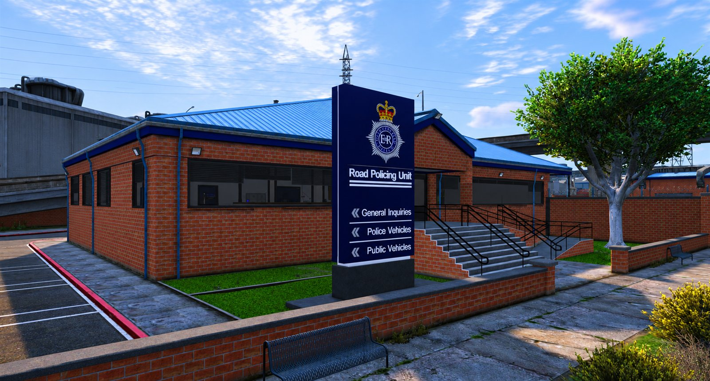
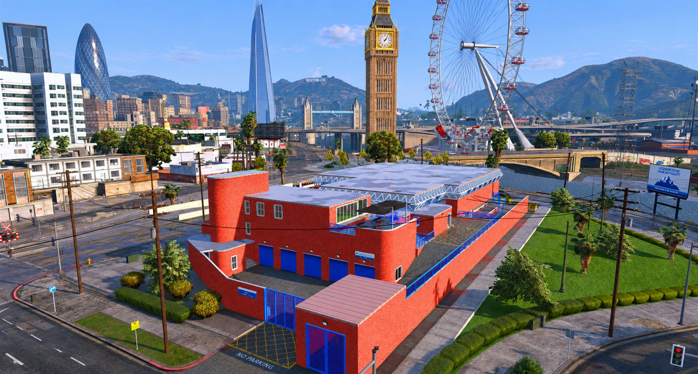
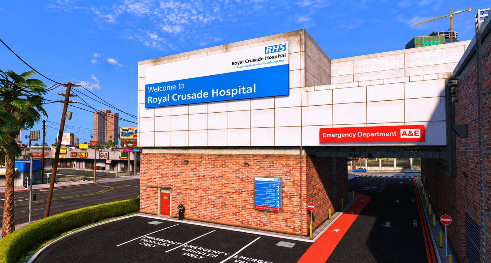
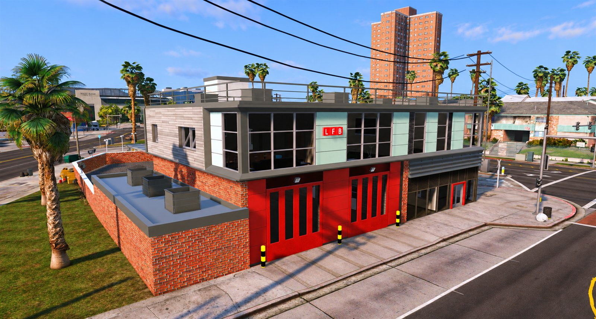
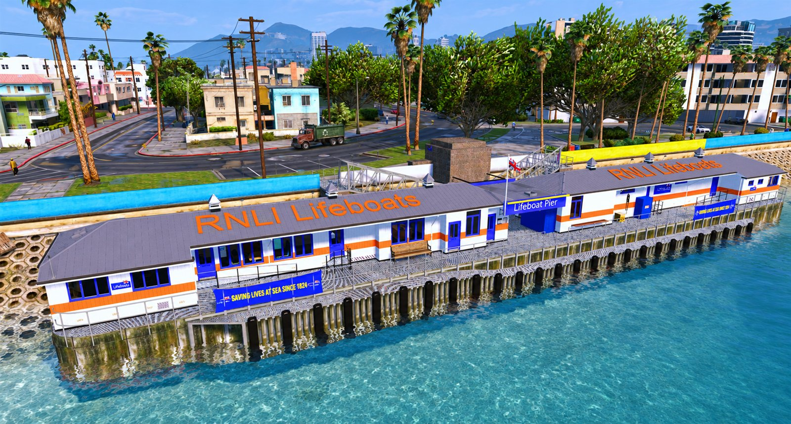

Police
Metropolitan Police Service
From neighbourhood patrols to traffic stops and response calls.

London-inspired FiveM roleplay
Take a call, run a shift or build a life of your own. Find your place in our London.
Departments
Work a shift with the emergency services or tell your own story as a civilian.

From neighbourhood patrols to traffic stops and response calls.

Respond to medical calls, treat patients and bring them to hospital.

Attend incidents and work alongside police and ambulance crews.

Create a character and shape their day-to-day life in the city.
Choose a role when you load in. Service players select their callsign and go on duty before spawning. Civilians go straight to spawn selection.
Server gallery
Explore the stations, hospital and vehicles you’ll see in game.
Leadership
Get in touch through Discord for community or server enquiries.
Get started
Join the community, read the rules and check announcements for session and department information.
Join DiscordInstall FiveM on a PC with GTA V. Open the connect link, or press F8 in FiveM and paste the command below.
connect cfx.re/join/vqqgxbxIf the server is missing, check Discord for the latest connection details.
Use your Discord account to see your Western Line server roles and access member tools.
Member portal